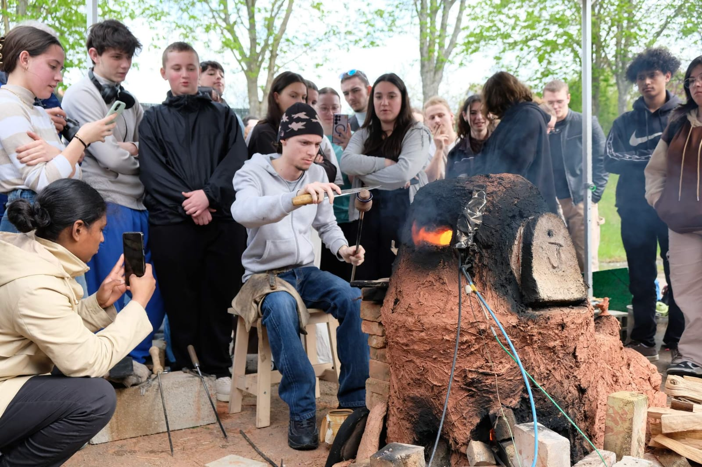

Une semaine consacrée au verre
Le verre est un matériau remarquable qui a accompagné l'histoire humaine pendant plus de
10 000 ans. Aujourd'hui, c'est aussi un matériau clé pour atteindre la transition énergétique.
D'où vient le verre? Comment est-il fabriqué? Comment pouvons-nous réduire son empreinte carbone?
Ces questions ont été explorées lors des Journées du Verre 2024 au Lycée Jean Monnet
à Yzeure.
La troisième édition de cet événement éducatif a rassemblé des étudiants, des enseignants, des artistes,
historiens, ingénieurs et chercheurs autour d’une passion commune : le verre.
Cette année, les participants ont reconstruit un four gaulois et ont exploré comment le verre était
produit et façonné il y a 2 000 ans. Ils ont également expérimenté avec la découpe du verre,
le polissage, la coloration et la production de verre reproduisant les compositions des vitraux.
Le programme a combiné des conférences matinales impliquant tous les programmes de formation au verre
(CAP, BMA, DNMADe…) avec des ateliers après-midi où les étudiants, les enseignants et les artistes
ont travaillé ensemble pour comprendre les technologies du verre, développer de nouvelles compositions
de verre exemptes de CO₂ et explorer les techniques historiques de fabrication du verre.
Télécharger le programme PDF

Les étudiants sont formés aux techniques anciennes de fabrication du verre pour reproduire des bracelets gaulois en utilisant un four reconstruit.